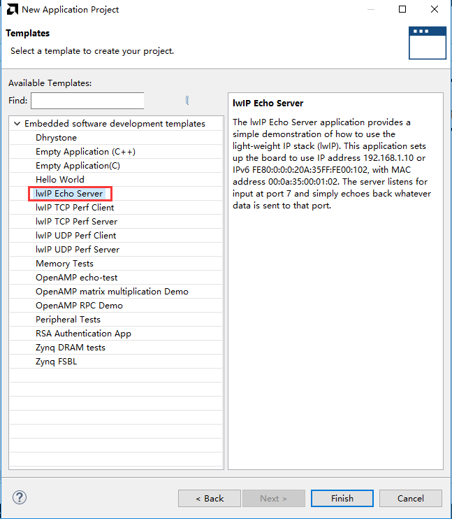

以太网实验（LWIP）#
实验Vivado工程为“net_test”。
开发板有1路千兆以太网，通过RGMII接口连接，本实验演示如何使用Vitis自带的LWIP模板进行千兆以太网TCP通信。
LWIP虽然是轻量级协议栈，但如果从来没有使用过，使用起来会有一定的困难，建议先熟悉LWIP的相关知识。
Vivado工程建立#
基于“ps_hello”另存一个“net_test”vivado工作。PS端Ethernet 0已经配置过。
Vitis程序开发#
LWIP库修改#
由于自带的LWIP库只能识别部分phy芯片，如果开发板所用的phy芯片不在默认支持范围内，要修改库文件。也可以直接使用修改过的库替换原有的库。
找到库文件目录“D:\Xilinx2023.1\Vitis\2023.1\data\embeddedsw\ThirdParty\sw_services”

找到要修改的文件目录“lwip213_v1_0\src\contrib\ports\xilinx\netif”中文件“xaxiemacif_physpeed.c”和“xemacpsif_physpeed.c”要修改。

修改“xaxiemacif_physpeed.c”文件，添加相关宏定义
{kind=link}
添加phy速度获取函数
unsigned int get_phy_speed_ksz9031(XAxiEthernet *xaxiemacp, u32 phy_addr) { u16 control; u16 status; u16 partner_capabilities; xil_printf(“Start PHY autonegotiation \r\n”); XAxiEthernet_PhyWrite(xaxiemacp,phy_addr, IEEE_PAGE_ADDRESS_REGISTER, 2); XAxiEthernet_PhyRead(xaxiemacp, phy_addr, IEEE_CONTROL_REG_MAC, &control); //control |= IEEE_RGMII_TXRX_CLOCK_DELAYED_MASK; control &= ~(0x10); XAxiEthernet_PhyWrite(xaxiemacp, phy_addr, IEEE_CONTROL_REG_MAC, control); XAxiEthernet_PhyWrite(xaxiemacp, phy_addr, IEEE_PAGE_ADDRESS_REGISTER, 0); XAxiEthernet_PhyRead(xaxiemacp, phy_addr, IEEE_AUTONEGO_ADVERTISE_REG, &control); control |= IEEE_ASYMMETRIC_PAUSE_MASK; control |= IEEE_PAUSE_MASK; control |= ADVERTISE_100; control |= ADVERTISE_10; XAxiEthernet_PhyWrite(xaxiemacp, phy_addr, IEEE_AUTONEGO_ADVERTISE_REG, control); XAxiEthernet_PhyRead(xaxiemacp, phy_addr, IEEE_1000_ADVERTISE_REG_OFFSET, &control); control |= ADVERTISE_1000; XAxiEthernet_PhyWrite(xaxiemacp, phy_addr, IEEE_1000_ADVERTISE_REG_OFFSET, control); XAxiEthernet_PhyWrite(xaxiemacp, phy_addr, IEEE_PAGE_ADDRESS_REGISTER, 0); XAxiEthernet_PhyRead(xaxiemacp, phy_addr, IEEE_COPPER_SPECIFIC_CONTROL_REG, &control); control |= (7 << 12); /* max number of gigabit attempts */ control |= (1 << 11); /* enable downshift */ XAxiEthernet_PhyWrite(xaxiemacp, phy_addr, IEEE_COPPER_SPECIFIC_CONTROL_REG, control); XAxiEthernet_PhyRead(xaxiemacp, phy_addr, IEEE_CONTROL_REG_OFFSET, &control); control |= IEEE_CTRL_AUTONEGOTIATE_ENABLE; control |= IEEE_STAT_AUTONEGOTIATE_RESTART; XAxiEthernet_PhyWrite(xaxiemacp, phy_addr, IEEE_CONTROL_REG_OFFSET, control); XAxiEthernet_PhyRead(xaxiemacp, phy_addr, IEEE_CONTROL_REG_OFFSET, &control); control |= IEEE_CTRL_RESET_MASK; XAxiEthernet_PhyWrite(xaxiemacp, phy_addr, IEEE_CONTROL_REG_OFFSET, control); while (1) { XAxiEthernet_PhyRead(xaxiemacp, phy_addr, IEEE_CONTROL_REG_OFFSET, &control); if (control & IEEE_CTRL_RESET_MASK) continue; else break; } xil_printf(“Waiting for PHY to complete autonegotiation.\r\n”); XAxiEthernet_PhyRead(xaxiemacp, phy_addr, IEEE_STATUS_REG_OFFSET, &status); while ( !(status & IEEE_STAT_AUTONEGOTIATE_COMPLETE) ) { sleep(1); XAxiEthernet_PhyRead(xaxiemacp, phy_addr, IEEE_STATUS_REG_OFFSET, &status); } xil_printf(“autonegotiation complete \r\n”); XAxiEthernet_PhyRead(xaxiemacp, phy_addr, 0x1f, &partner_capabilities); if ( (partner_capabilities & 0x40) == 0x40)/* 1000Mbps */ return 1000; else if ( (partner_capabilities & 0x20) == 0x20)/* 100Mbps */ return 100; else if ( (partner_capabilities & 0x10) == 0x10)/* 10Mbps */ return 10; else return 0; } static u32_t get_phy_speed_JL2121(XAxiEthernet *xaxiemacp, u32_t phy_addr) { u16_t temp; u16_t control; u16_t status; u16_t status_speed; u32_t timeout_counter = 0; u32_t temp_speed; u32_t phyregtemp; xil_printf(”phy is JL2121!\r\n”); xil_printf(“Start PHY autonegotiation \r\n”); XAxiEthernet_PhyRead(xaxiemacp, phy_addr, IEEE_CONTROL_REG_OFFSET, &control); control |= IEEE_CTRL_RESET_MASK; XAxiEthernet_PhyWrite(xaxiemacp, phy_addr, IEEE_CONTROL_REG_OFFSET, control); usleep(10000); XAxiEthernet_PhyRead(xaxiemacp, phy_addr, IEEE_AUTONEGO_ADVERTISE_REG, &control); control |= IEEE_ASYMMETRIC_PAUSE_MASK; control |= IEEE_PAUSE_MASK; control |= ADVERTISE_100; control |= ADVERTISE_10; XAxiEthernet_PhyWrite(xaxiemacp, phy_addr, IEEE_AUTONEGO_ADVERTISE_REG, control); XAxiEthernet_PhyRead(xaxiemacp, phy_addr, IEEE_1000_ADVERTISE_REG_OFFSET, &control); control |= ADVERTISE_1000; XAxiEthernet_PhyWrite(xaxiemacp, phy_addr, IEEE_1000_ADVERTISE_REG_OFFSET, control); XAxiEthernet_PhyRead(xaxiemacp, phy_addr, IEEE_CONTROL_REG_OFFSET, &control); control |= IEEE_CTRL_AUTONEGOTIATE_ENABLE; control |= IEEE_STAT_AUTONEGOTIATE_RESTART; XAxiEthernet_PhyWrite(xaxiemacp, phy_addr, IEEE_CONTROL_REG_OFFSET, control); while (1) { XAxiEthernet_PhyRead(xaxiemacp, phy_addr, IEEE_CONTROL_REG_OFFSET, &control); if (control & IEEE_CTRL_RESET_MASK) continue; else break; } XAxiEthernet_PhyRead(xaxiemacp, phy_addr, IEEE_STATUS_REG_OFFSET, &status); xil_printf(“Waiting for PHY to complete autonegotiation.\r\n”); while ( !(status & IEEE_STAT_AUTONEGOTIATE_COMPLETE) ) { sleep(1); timeout_counter++; if (timeout_counter == 30) { xil_printf(“Auto negotiation error \r\n”); return; } XAxiEthernet_PhyRead(xaxiemacp, phy_addr, IEEE_STATUS_REG_OFFSET, &status); } xil_printf(”autonegotiation complete \r\n”); XAxiEthernet_PhyWrite(xaxiemacp, phy_addr,JLSEMI_PHY_SELECT_REG_OFFSET,JLSEMI_PHY_SPECIFIC_PAGE); XAxiEthernet_PhyRead(xaxiemacp, phy_addr, JLSEMI_PHY_SPECIFIC_STATUS_REG_OFFSET, &status_speed); XAxiEthernet_PhyWrite(xaxiemacp, phy_addr,JLSEMI_PHY_SELECT_REG_OFFSET,JLSEMI_PHY_LCR_PAGE); XAxiEthernet_PhyWrite(xaxiemacp, phy_addr,JLSEMI_PHY_LED_CONTROL_REG_OFFSET,0xAE01); XAxiEthernet_PhyWrite(xaxiemacp, phy_addr,JLSEMI_PHY_SELECT_REG_OFFSET,JLSEMI_PHY_LED_BLINK_PAGE); XAxiEthernet_PhyWrite(xaxiemacp, phy_addr,JLSEMI_PHY_LED_BLINK_REG_OFFSET,0x0704); XAxiEthernet_PhyWrite(xaxiemacp, phy_addr,JLSEMI_PHY_SELECT_REG_OFFSET,0); if ( (status_speed & 0x20) == 0x20)/* 1000Mbps */ return 1000; else if ( (status_speed & 0x10) == 0x10)/* 100Mbps */ return 100; else if ( (status_speed & 0x30) == 0x0)/* 10Mbps */ return 10; else return 0; return XST_SUCCESS; } |
修改函数“get_IEEE_phy_speed”，添加对KSZ9031和JL2121的支持。
unsigned get_IEEE_phy_speed(XAxiEthernet *xaxiemacp) { u16 phy_identifier; u16 phy_model; u8 phytype; #ifdef XPAR_AXIETHERNET_0_BASEADDR u32 phy_addr = detect_phy(xaxiemacp); /* Get the PHY Identifier and Model number */ XAxiEthernet_PhyRead(xaxiemacp, phy_addr, PHY_IDENTIFIER_1_REG, &phy_identifier); XAxiEthernet_PhyRead(xaxiemacp, phy_addr, PHY_IDENTIFIER_2_REG, &phy_model); /* Depending upon what manufacturer PHY is connected, a different mask is * needed to determine the specific model number of the PHY. */ if (phy_identifier == MARVEL_PHY_IDENTIFIER) { phy_model = phy_model & MARVEL_PHY_MODEL_NUM_MASK; if (phy_model == MARVEL_PHY_88E1116R_MODEL) { return get_phy_speed_88E1116R(xaxiemacp, phy_addr); } else if (phy_model == MARVEL_PHY_88E1111_MODEL) { return get_phy_speed_88E1111(xaxiemacp, phy_addr); } } else if (phy_identifier == TI_PHY_IDENTIFIER) { phy_model = phy_model & TI_PHY_DP83867_MODEL; phytype = XAxiEthernet_GetPhysicalInterface(xaxiemacp); if (phy_model == TI_PHY_DP83867_MODEL && phytype == XAE_PHY_TYPE_SGMII) { return get_phy_speed_TI_DP83867_SGMII(xaxiemacp, phy_addr); } if (phy_model == TI_PHY_DP83867_MODEL) { return get_phy_speed_TI_DP83867(xaxiemacp, phy_addr); } } else if(phy_identifier == MICREL_PHY_IDENTIFIER) { xil_printf(“Phy %d is KSZ9031\n\r”, phy_addr); get_phy_speed_ksz9031(xaxiemacp, phy_addr); } else if(phy_identifier == JLSEMI_IDENTIFIER) { return get_phy_speed_JL2121(xaxiemacp, phy_addr); } else { LWIP_DEBUGF(NETIF_DEBUG, (“XAxiEthernet get_IEEE_phy_speed: Detected PHY with unknown identifier/model.\r\n”)); } #endif #ifdef PCM_PMA_CORE_PRESENT return get_phy_negotiated_speed(xaxiemacp, phy_addr); #endif } |
修改“xemacpsif_physpeed.c”文件添加宏定义

添加phy速度获取函数
static u32_t get_phy_speed_ksz9031(XEmacPs *xemacpsp, u32_t phy_addr) { u16_t temp; u16_t control; u16_t status; u16_t status_speed; u32_t timeout_counter = 0; u32_t temp_speed; u32_t phyregtemp; xil_printf(“Start PHY autonegotiation \r\n”); XEmacPs_PhyWrite(xemacpsp,phy_addr, IEEE_PAGE_ADDRESS_REGISTER, 2); XEmacPs_PhyRead(xemacpsp, phy_addr, IEEE_CONTROL_REG_MAC, &control); control |= IEEE_RGMII_TXRX_CLOCK_DELAYED_MASK; XEmacPs_PhyWrite(xemacpsp, phy_addr, IEEE_CONTROL_REG_MAC, control); XEmacPs_PhyWrite(xemacpsp, phy_addr, IEEE_PAGE_ADDRESS_REGISTER, 0); XEmacPs_PhyRead(xemacpsp, phy_addr, IEEE_AUTONEGO_ADVERTISE_REG, &control); control |= IEEE_ASYMMETRIC_PAUSE_MASK; control |= IEEE_PAUSE_MASK; control |= ADVERTISE_100; control |= ADVERTISE_10; XEmacPs_PhyWrite(xemacpsp, phy_addr, IEEE_AUTONEGO_ADVERTISE_REG, control); XEmacPs_PhyRead(xemacpsp, phy_addr, IEEE_1000_ADVERTISE_REG_OFFSET, &control); control |= ADVERTISE_1000; XEmacPs_PhyWrite(xemacpsp, phy_addr, IEEE_1000_ADVERTISE_REG_OFFSET, control); XEmacPs_PhyWrite(xemacpsp, phy_addr, IEEE_PAGE_ADDRESS_REGISTER, 0); XEmacPs_PhyRead(xemacpsp, phy_addr, IEEE_COPPER_SPECIFIC_CONTROL_REG, &control); control |= (7 << 12); /* max number of gigabit attempts */ control |= (1 << 11); /* enable downshift */ XEmacPs_PhyWrite(xemacpsp, phy_addr, IEEE_COPPER_SPECIFIC_CONTROL_REG, control); XEmacPs_PhyRead(xemacpsp, phy_addr, IEEE_CONTROL_REG_OFFSET, &control); control |= IEEE_CTRL_AUTONEGOTIATE_ENABLE; control |= IEEE_STAT_AUTONEGOTIATE_RESTART; XEmacPs_PhyWrite(xemacpsp, phy_addr, IEEE_CONTROL_REG_OFFSET, control); XEmacPs_PhyRead(xemacpsp, phy_addr, IEEE_CONTROL_REG_OFFSET, &control); control |= IEEE_CTRL_RESET_MASK; XEmacPs_PhyWrite(xemacpsp, phy_addr, IEEE_CONTROL_REG_OFFSET, control); while (1) { XEmacPs_PhyRead(xemacpsp, phy_addr, IEEE_CONTROL_REG_OFFSET, &control); if (control & IEEE_CTRL_RESET_MASK) continue; else break; } XEmacPs_PhyRead(xemacpsp, phy_addr, IEEE_STATUS_REG_OFFSET, &status); xil_printf(“Waiting for PHY to complete autonegotiation.\r\n”); while ( !(status & IEEE_STAT_AUTONEGOTIATE_COMPLETE) ) { sleep(1); XEmacPs_PhyRead(xemacpsp, phy_addr, IEEE_COPPER_SPECIFIC_STATUS_REG_2, &temp); timeout_counter++; if (timeout_counter == 30) { xil_printf(“Auto negotiation error \r\n”); return; } XEmacPs_PhyRead(xemacpsp, phy_addr, IEEE_STATUS_REG_OFFSET, &status); } xil_printf(“autonegotiation complete \r\n”); XEmacPs_PhyRead(xemacpsp, phy_addr,0x1f, &status_speed); if ( (status_speed & 0x40) == 0x40)/* 1000Mbps */ return 1000; else if ( (status_speed & 0x20) == 0x20)/* 100Mbps */ return 100; else if ( (status_speed & 0x10) == 0x10)/* 10Mbps */ return 10; else return 0; return XST_SUCCESS; } static u32_t get_phy_speed_JL2121(XEmacPs *xemacpsp, u32_t phy_addr) { u16_t temp; u16_t control; u16_t status; u16_t status_speed; u32_t timeout_counter = 0; u32_t temp_speed; u32_t phyregtemp; xil_printf(”phy is JL2121!\r\n”); xil_printf(“Start PHY autonegotiation \r\n”); XEmacPs_PhyRead(xemacpsp, phy_addr, IEEE_CONTROL_REG_OFFSET, &control); control |= IEEE_CTRL_RESET_MASK; XEmacPs_PhyWrite(xemacpsp, phy_addr, IEEE_CONTROL_REG_OFFSET, control); usleep(10000); XEmacPs_PhyRead(xemacpsp, phy_addr, IEEE_AUTONEGO_ADVERTISE_REG, &control); control |= IEEE_ASYMMETRIC_PAUSE_MASK; control |= IEEE_PAUSE_MASK; control |= ADVERTISE_100; control |= ADVERTISE_10; XEmacPs_PhyWrite(xemacpsp, phy_addr, IEEE_AUTONEGO_ADVERTISE_REG, control); XEmacPs_PhyRead(xemacpsp, phy_addr, IEEE_1000_ADVERTISE_REG_OFFSET, &control); control |= ADVERTISE_1000; XEmacPs_PhyWrite(xemacpsp, phy_addr, IEEE_1000_ADVERTISE_REG_OFFSET, control); XEmacPs_PhyRead(xemacpsp, phy_addr, IEEE_CONTROL_REG_OFFSET, &control); control |= IEEE_CTRL_AUTONEGOTIATE_ENABLE; control |= IEEE_STAT_AUTONEGOTIATE_RESTART; XEmacPs_PhyWrite(xemacpsp, phy_addr, IEEE_CONTROL_REG_OFFSET, control); while (1) { XEmacPs_PhyRead(xemacpsp, phy_addr, IEEE_CONTROL_REG_OFFSET, &control); if (control & IEEE_CTRL_RESET_MASK) continue; else break; } XEmacPs_PhyRead(xemacpsp, phy_addr, IEEE_STATUS_REG_OFFSET, &status); xil_printf(“Waiting for PHY to complete autonegotiation.\r\n”); while ( !(status & IEEE_STAT_AUTONEGOTIATE_COMPLETE) ) { sleep(1); timeout_counter++; if (timeout_counter == 30) { xil_printf(“Auto negotiation error \r\n”); return; } XEmacPs_PhyRead(xemacpsp, phy_addr, IEEE_STATUS_REG_OFFSET, &status); } xil_printf(”autonegotiation complete \r\n”); XEmacPs_PhyWrite(xemacpsp, phy_addr,JLSEMI_PHY_SELECT_REG_OFFSET,JLSEMI_PHY_SPECIFIC_PAGE); XEmacPs_PhyRead(xemacpsp, phy_addr, JLSEMI_PHY_SPECIFIC_STATUS_REG_OFFSET, &status_speed); XEmacPs_PhyWrite(xemacpsp, phy_addr,JLSEMI_PHY_SELECT_REG_OFFSET,JLSEMI_PHY_LCR_PAGE); XEmacPs_PhyWrite(xemacpsp, phy_addr,JLSEMI_PHY_LED_CONTROL_REG_OFFSET,0xAE01); XEmacPs_PhyWrite(xemacpsp, phy_addr,JLSEMI_PHY_SELECT_REG_OFFSET,JLSEMI_PHY_LED_BLINK_PAGE); XEmacPs_PhyWrite(xemacpsp, phy_addr,JLSEMI_PHY_LED_BLINK_REG_OFFSET,0x0704); XEmacPs_PhyWrite(xemacpsp, phy_addr,JLSEMI_PHY_SELECT_REG_OFFSET,0); if ( (status_speed & 0x20) == 0x20)/* 1000Mbps */ return 1000; else if ( (status_speed & 0x10) == 0x10)/* 100Mbps */ return 100; else if ( (status_speed & 0x30) == 0x0)/* 10Mbps */ return 10; else return 0; return XST_SUCCESS; } |
修改函数“get_IEEE_phy_speed”，添加对KSZ9031和JL2121的支持
static u32_t get_IEEE_phy_speed(XEmacPs *xemacpsp, u32_t phy_addr) { u16_t phy_identity; u32_t RetStatus; XEmacPs_PhyRead(xemacpsp, phy_addr, PHY_IDENTIFIER_1_REG, &phy_identity); if(phy_identity == MICREL_PHY_IDENTIFIER) { RetStatus = get_phy_speed_ksz9031(xemacpsp, phy_addr); }else if (phy_identity == JLSEMI_IDENTIFIER) { RetStatus = get_phy_speed_JL2121(xemacpsp, phy_addr); } else if (phy_identity == PHY_TI_IDENTIFIER) { RetStatus = get_TI_phy_speed(xemacpsp, phy_addr); } else { RetStatus = get_Marvell_phy_speed(xemacpsp, phy_addr); } return RetStatus; } |
创建基于LWIP模板的APP#
{kind=link}
下载调试#
测试环境要求有一台支持dhcp的路由器，开发板连接路由器可以自动获取IP地址，实验主机和开发板在一个网络，可以相互通信。
以太网测试#
连接串口打开串口调试终端，连接好PS端以太网网线到路由器，运行Vitis
{kind=link}
可以看到串口打印出一些信息，可以看到自动获取到地址为“192.168.1.63”，连接速度1000Mbps，tcp端口为7
{kind=link}
使用telnet连接
{kind=link}
当输入一个字符时，开发板返回相同字符
{kind=link}
实验总结#
通过实验我们更加深刻了解到Vitis程序的开发，本实验只是简单的讲解如何创建一个LWIP应用，LWIP可以完成UDP、TCP等协议，在后续的教程中我们会提供基于以太网的具体应用，例如ADC采集数据通过以太网发送，摄像头数据通过以太网发送上位机显示。
ZYNQ-7000开发平台 FPGA教程 - Alinx官方网站